Making a visual novel with Cyberdeck
Write your story as you would in Word, with a few notes in brackets for the stage. Cyberdeck turns it into pages, characters and choices. Your players play it in Datajack.
The basics
1. Create a project
A project holds one whole game: its chapters, characters, pictures and music. On the first screen, type the name of your game and choose the language it is written in, then press Create.
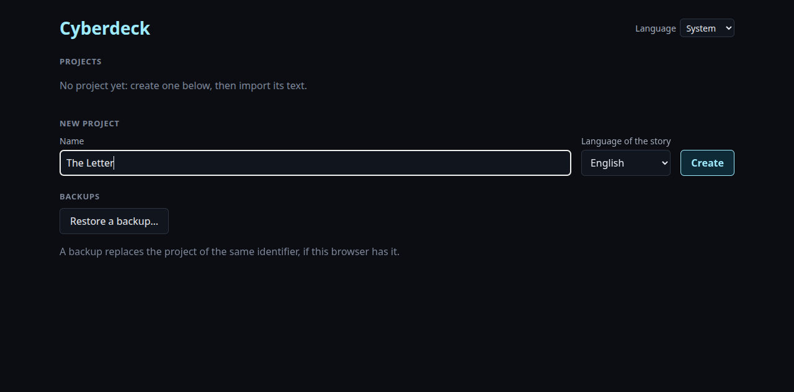
Cyberdeck saves everything as you go: there is no Save button to remember.
Cyberdeck speaks English and French. It follows your computer's language; the Language menu, on this screen or at the top of a project, changes it. Your players choose theirs in Datajack.
2. Write or paste your story
A new project opens on the Import tab. Paste your text there, or press
Open a document… to read a Word (.docx) or text file. To see how it works
first, press Use the sample story.
No text yet? Start without a text opens an empty chapter in the storyboard, where you write it page by page. More chapters and scenes come from New chapter and New scene, in the Chapters tab.
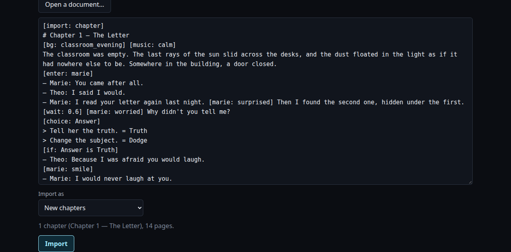
The rules are few:
| You write | It becomes |
|---|---|
| A paragraph | Narration. |
— Marie: You came after all. | Marie speaks. Dialogue always starts with a dash, then the name, then a colon. |
— ???: Who's there? | A voice nobody knows yet. |
# Chapter 1 — The Letter | A new chapter, with its title. |
[something in brackets] | A note for the stage or the story, never shown as text. |
You don't have to cut your text into pages. A page holds two lines, and Cyberdeck cuts long paragraphs by itself, between sentences when it can.
Import as, under the text, says where it goes: New chapters after those you have, Pages at the end of a chapter to continue one, or In place of a chapter to replace one with a new version. Cyberdeck picks the right one by itself most of the time; you only change it to continue a chapter.
Press Import. Your chapter appears in the Chapters tab, where chapters can be moved, renamed, removed, or played from.
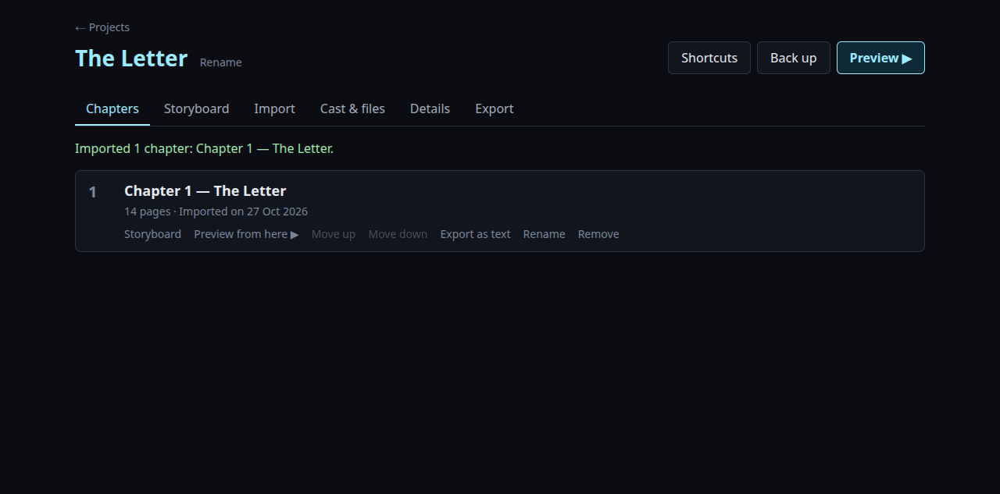
3. Set the stage
Brackets tell the stage what to do. A bracket alone on its line applies when the next page appears; one inside a sentence applies when the text reaches it.
[bg: classroom_evening] [music: calm] The classroom was empty. [enter: marie] — Marie: I read your letter. [marie: surprised] Then I found the second one. [exit: marie]
| You write | What happens |
|---|---|
[bg: rooftop] | The background changes. |
[music: calm], [music: stop] | A track plays in a loop, or stops. |
[enter: marie] | Marie walks in. The first character stands on the left, the second on the right, the third in the middle. |
[marie: smile] | Marie changes expression. |
[exit: marie] | Marie leaves. |
[wait: 0.5] | The text pauses for half a second. |
You never need to declare a character, a background or a track: naming it in the text creates it. If you
mistype a word Cyberdeck knows, like [backgound: …], it tells you instead of creating a
character called “Backgound”.
4. Add pictures and music
In Cast & files, drop your images and sounds, or click to choose them. Each file goes where its name says:
| File | Goes to |
|---|---|
rooftop.jpg | The background “rooftop” |
marie.png | Marie's “normal” expression, the one she enters with |
marie-smile.png | Marie's “smile” expression |
calm.mp3 | The track “calm” |
opening.webm | The video “opening” (.webm or .mp4) |
opening.vtt | Its captions, for players who want them |
Capitals, spaces, hyphens and underscores don't matter. Dropping a new file replaces the old one.
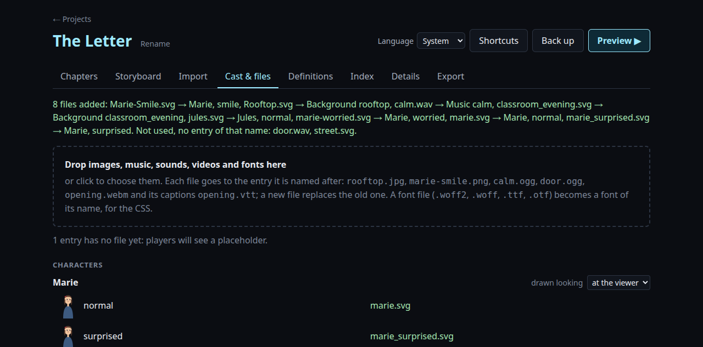
Anything still without a file shows as a grey placeholder, so you can write first and draw later.
5. Play it
Preview ▶, at the top right, plays your game exactly as players will see it. Press Esc to come back.
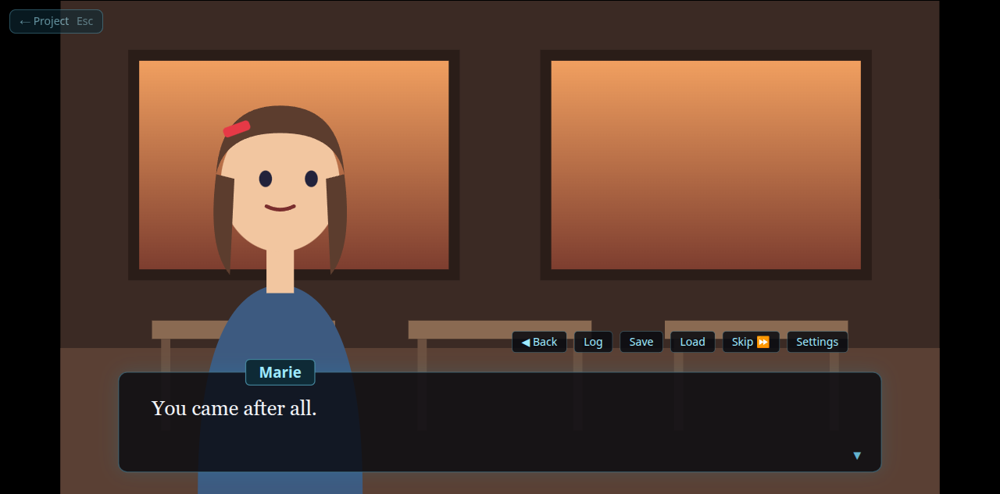
| To | Press |
|---|---|
| Go on | Space, Enter or a click |
| Go back | ← or the mouse wheel up |
| Read what came before | L (the log) |
| Hide the text to see the picture | H or a right click |
| Skip what you have already read | S |
| Settings: text speed, volumes, keys | O |
6. Your story as cards
The Storyboard shows a chapter as cards, read left to right and top to bottom. Each card is a page; the small ◧ and its number say how many stage notes come with it.
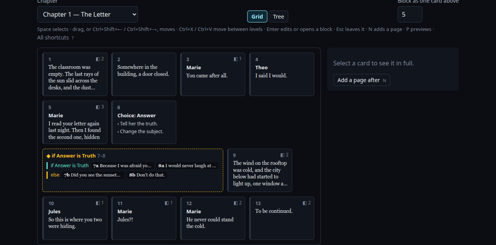
Click a card to see it in full on the right. Then:
- Enter edits it, as the text you would import;
- N writes new pages after it;
- P plays the game from there;
- drag cards to move them, and Delete removes them. Ctrl+Z undoes.
Everything also works without a mouse: the arrows move around, Space selects, and Ctrl+Shift+arrows move what is selected.
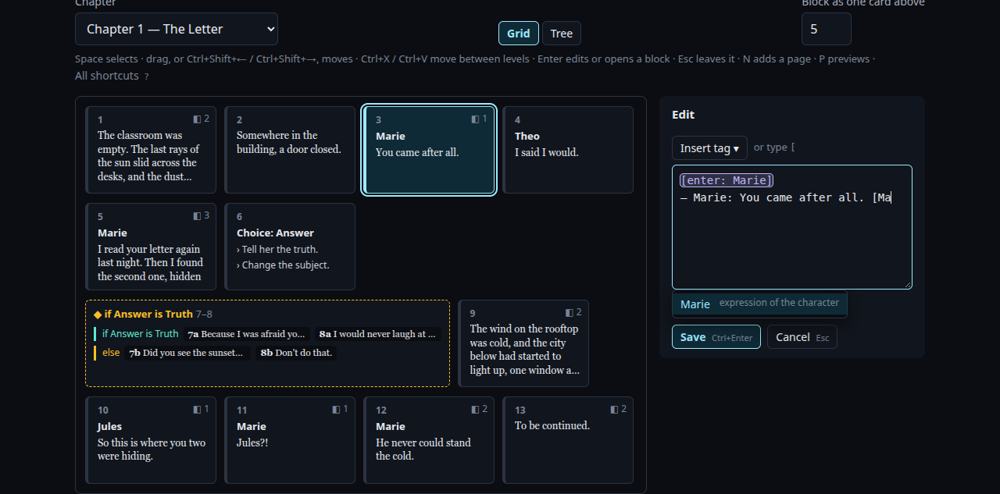
[ suggests what can go there.While editing, Insert tag lists every kind of note, if you'd rather pick than type. Ctrl+Enter saves, Esc cancels. The card you are editing is marked ✎, and nothing you wrote is lost by accident: opening another card, another chapter or another tab first asks whether to Save, Discard or Keep editing.
Typing on the keyboard after clicking elsewhere? Alt+G brings you back to the cards, on what you had selected. While editing a page, it jumps between the text and its card. Alt+Page Down and Alt+Page Up go from tab to tab.
In a narrow window, the panel slides in from the right edge when you click a card or edit one; its handle, or Alt+P, puts it away.
7. Choices and branches
A choice gives a decision a value. Later, the story can depend on it:
[choice: Answer] > Tell her the truth. = Truth > Change the subject. = Dodge [if: Answer is Truth] — Theo: Because I was afraid you would laugh. [else] — Theo: Did you see the sunset? [end] The wind on the rooftop was cold.
Each > line is an option: what the player reads, then = and the value it
gives. Between [if: …] and [end] is what plays only in that case;
[else] is for every other case, and [else if: …] tests something else. After
[end], everyone reads the same story again.
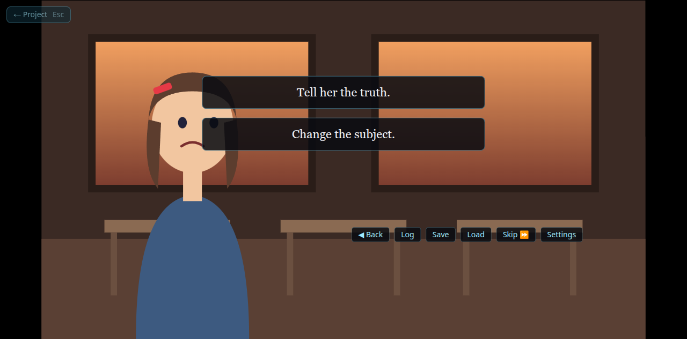
In the storyboard, an [if] is one block. Double-click it, or press Enter, to open
it and see each branch on its own line. Esc goes back up.
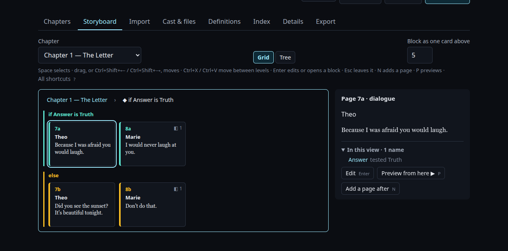
Conditions can combine: [if: Answer is Truth and Mood is not Angry], or with
or.
8. Share your game
In Details, add a description, credits and a cover picture: players see them in their
library. Then, in Export, give the release a name and press Export. You get
one .zip file: that is your game.
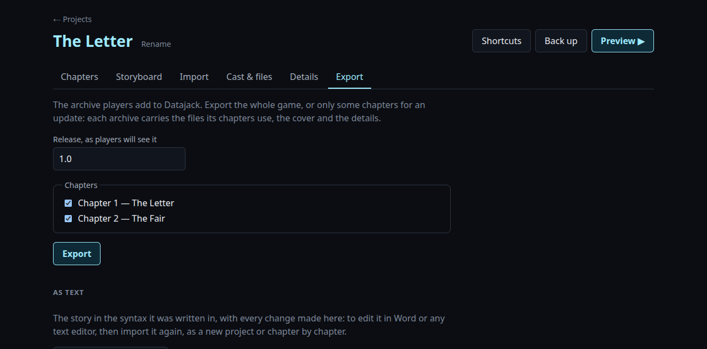
Players open Datajack, press Add a game… (or drop the file on it), and play.
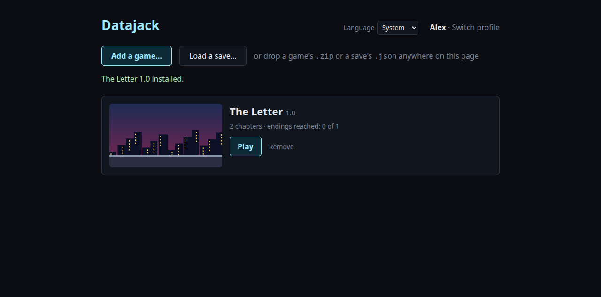
Writing chapter by chapter? Tick only the new chapters to make a small update. Players add it like a game, and it joins the one they have, their saves kept.
Going further
9. When the import finds a problem
Cyberdeck checks your text as you type, and lists what is wrong with its line number. An error must be fixed before importing; a warning only points out something that looks odd.
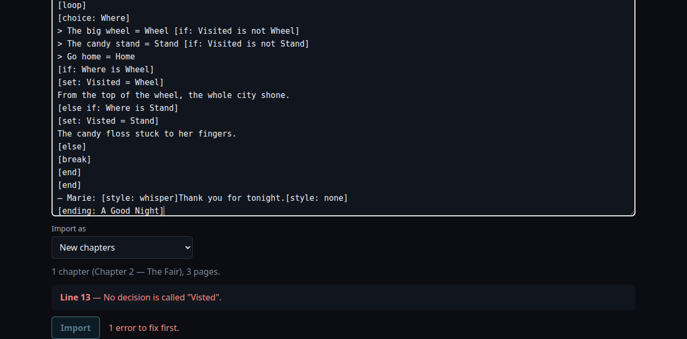
It also tells you about pages nobody can reach (every path before them has ended) and loops with no way out. In the storyboard, such pages are faded, and the blocks holding them say so.
10. Endings, and what players remember
[ending: Alone]
The story ends there, with that name on the end screen. Players see how many of your endings they have
found. A branch that ends stops there; one that doesn't carries on after its [end]. So
several branches can share one ending: just write it after the block.
[remember: The ghost's name] … [if: remembered The ghost's name] — Marie: I know who you are. [end]
Unlike decisions, what a player remembers stays across every new playthrough: for a story
that knows you have been there before. [if: seen ending Alone] works the same way.
11. More about decisions, and counters
Until a choice sets it, a decision has no value: [if: Answer is Truth] is false, and
[if: Answer is not Truth] is true. A new playthrough starts with none.
A decision normally holds one value, each new one replacing the last. To collect several, such as clues
found or places visited, declare it with multi:
[decision multi: Clues = Letter | Key] [set: Clues = Letter] … [unset: Clues = Key]
[set] gives a value without asking the player. [unset] takes it away (the key
was lost), and [unset: Clues] takes them all away.
What the story counts, such as affection, money or the rounds of a fight, is a counter.
[add] adds 1, or the number after the name, and a condition compares it with a number:
[add: Affection] … [add: Affection -1] … [if: Affection >= 3] — Marie: I'm glad you came. [end]
A counter starts at 0. To start it elsewhere, declare it: [counter: Affection = 2].
[set: Affection = 0] starts it over. Conditions can use >, >=,
<, <=, is and is not. Like decisions, counters are
saved with the game and undone by going back.
12. Keeping track of decisions
A decision or a style can be declared anywhere, and used everywhere. Two tabs keep them from getting lost.
Definitions holds the declarations that belong to no chapter in particular, as text. A declaration written in a chapter stays there, as a ◇ card in the storyboard; Definitions lists it with its place, and Move to Definitions brings it over. A decision made only by its choices is listed too.
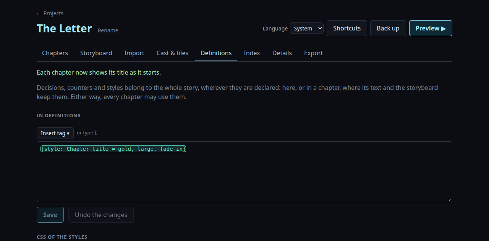
Index lists every decision, counter and memory, with every place it is given a value or tested. Click a place to see the card. At the top, it points out what looks forgotten: a value tested but never given, so that condition can never hold; an ending no path reaches; a memory nobody checks.
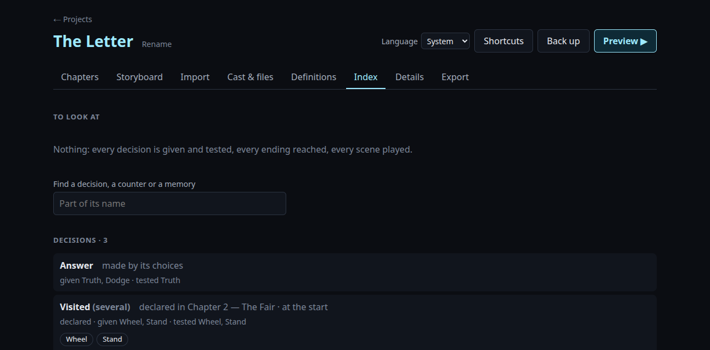
In the storyboard, In this view, under the panel, lists the decisions, counters and memories the cards on screen use. Inside an opened block, it's only that block's.
13. Places to come back to
For a hub the player returns to until they choose to leave, use a [loop]. It plays again and
again until a [break]:
[decision multi: Visited = Wheel | Stand] [loop] [choice: Where] > The big wheel = Wheel [if: Visited is not Wheel] > The candy stand = Stand [if: Visited is not Stand] > Go home = Home [if: Where is Wheel] [set: Visited = Wheel] From the top of the wheel, the whole city shone. [else if: Where is Stand] [set: Visited = Stand] The candy floss stuck to her fingers. [else] [break] [end] [end]
An option followed by [if: …] is offered only while that holds: here, each place disappears
once visited.
14. Scenes: write once, play anywhere
A bad end that can happen in chapter 2 and again in chapter 5 is written once, as a scene, and played wherever you need it. After a scene, the story goes on where it was, unless the scene ended it.
# Chapter 2 [if: Answer is Lie] [play: Caught] [end] The guard lets you pass. # Scene: Caught — Guard: Stop right there. [ending: Caught]
15. Chapters of a route
A chapter that belongs to one route only says so right under its title. Other players pass it by:
# Chapter 3 — Marie's route [only if: Route is Marie]
16. Characters on stage
| You write | What happens |
|---|---|
[enter: marie right smile] | Where she stands and how she looks. Places: far-left, left, center, right, far-right, or 35% of the width. |
[move: marie center] | She walks over. |
[enter: jules slide-from-right 0.8s wait] | He slides in; wait holds the text until he arrives. |
[exit: marie fade 1.5s] | She fades out slowly. |
[enter: marie near], far | Closer (larger, in front) or further away. |
[enter: marie facing-left] | Which way she looks. By default characters look towards the middle. |
In Cast & files, tell Cyberdeck which way each character was drawn looking, and it turns them the right way.
17. Sounds, voices, videos and screen effects
| You write | What happens |
|---|---|
[sound: door] | A sound plays once. Its file is named after it: door.ogg. |
[voice: marie-01]— Marie: Hello. | Marie's line is heard: marie-01.ogg. It stops when the player moves on, and plays again if they come back to the page. |
[video: Opening] | A video fills the screen, and the text waits until it ends. Clicking or pressing Space passes it. Captions go in a file named like it, Opening.vtt. |
[transition: fade] | The next background fades in. Also black or white, with a duration: [transition: black 1.5s]. |
[shake], [shake: strong] | The screen trembles. |
[flash: red] | A flash of colour. |
[fade out: 1s] … [fade in: 1s] | The screen goes black (or white), the text showing over it. |
[tint: sepia], night, grey, none | Colours the whole picture, for a memory or a night. |
Inside a sentence, a sound, shake or flash plays when the text reaches it.
18. How the text looks
Give a style a name and what it looks like, then use it inside the text:
[style: Whisper = italic, small, grey] — Marie: [style: whisper]Don't tell anyone.[style: none] Promise?
The looks to pick from: italic, bold, small, large,
grey, red, blue, green, gold,
shaking, and three that appear as the text is typed: fade-in, rise,
glow. One alone needs no name: [style: italic]. Italics in a Word document
are kept.
For anything else, Definitions takes CSS. Each class is a style:
.ghost {
color: #8af;
text-shadow: 0 0 6px #8af;
}
…and [style: ghost] draws it. For a font of your own, drop its file (.woff2,
.ttf…) in Cast & files, then name it: font-family: "Cinzel".
The game carries it to your players. Only how text looks is kept. Anything that would load a file,
or touch the player's own buttons, is left out, and the tab says what and why. Text in a larger style
is cut into shorter pages, so it always fits the box.
Title cards, in Definitions, show each chapter's title over the stage as it starts. Give
them a look with a style named chapter title, and the ending's name with one named
ending.
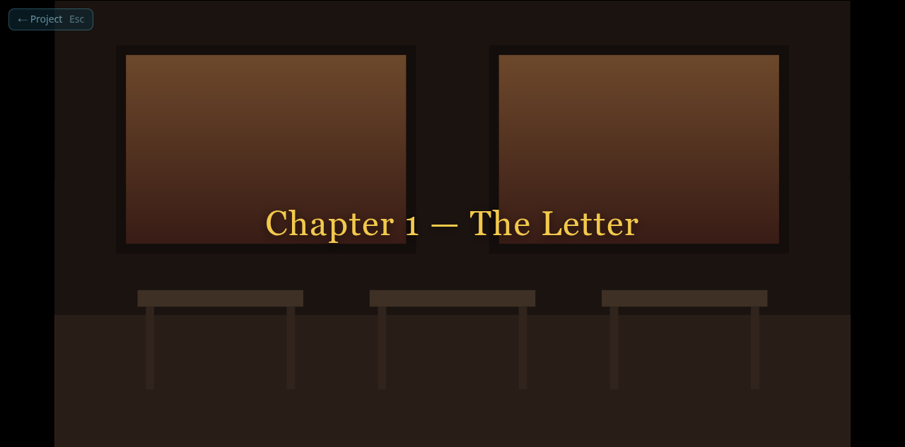
For long narration, [text: full] writes over the whole screen, as in a book, the pages
piling up until [clear]. [text: box] brings the text box back.
19. Illustrations and the gallery
[illustration: Sunrise] … [illustration: none]
A full-screen picture of a key moment. Players find the ones they have seen in the game's Gallery, in their library; the others stay locked.
20. Working in Word
You can write your whole story in Word and open the .docx in the Import tab. Titles in
the “Heading 1” style become chapters. A dialogue line that Word turned into a bulleted list is still dialogue.
To edit in Word again later, Export as text (in Chapters, for one chapter) writes the
story back with every change you made in Cyberdeck. Import it again, and Cyberdeck chooses
In place of a chapter by itself, for the chapter of the same title: its first line,
[import: chapter], says it is one. The chapter keeps its place, and players' saves inside it
keep working.
21. Tree view, shortcuts and backups
The grid keeps each block folded, to see the whole chapter at a glance and move things around. The storyboard's Tree view unfolds everything instead: one card per line, the branches of each block side by side, to follow how the story goes. Here is the fair of chapter 2 in both views.
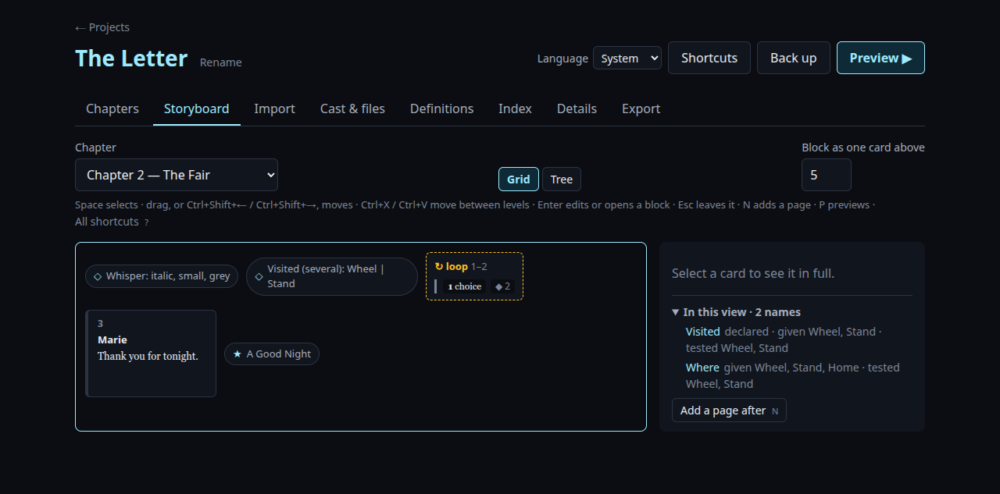
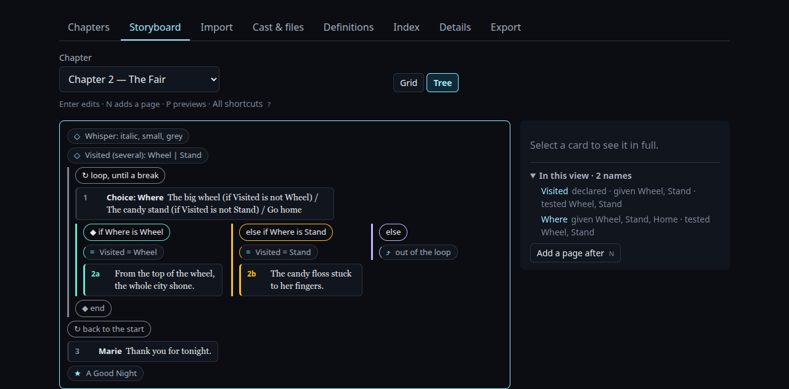
Shortcuts (or ?) lists every key by screen; click one to change it.
Back up downloads your whole project as one file. Restore a backup…, on the projects screen, brings it back, on this computer or another. Do it now and then.
22. What your players see
Players have their own Settings, in three categories. General: text speed, volumes (music and videos, sounds, voices), full screen. Accessibility: larger text, a plainer font, a stronger contrast, pages read aloud, choices that wait for them, and captions on videos. Players with a screen reader hear each page whole as it appears. Controls: their own keys. You have nothing to do for any of it: it works in every game.
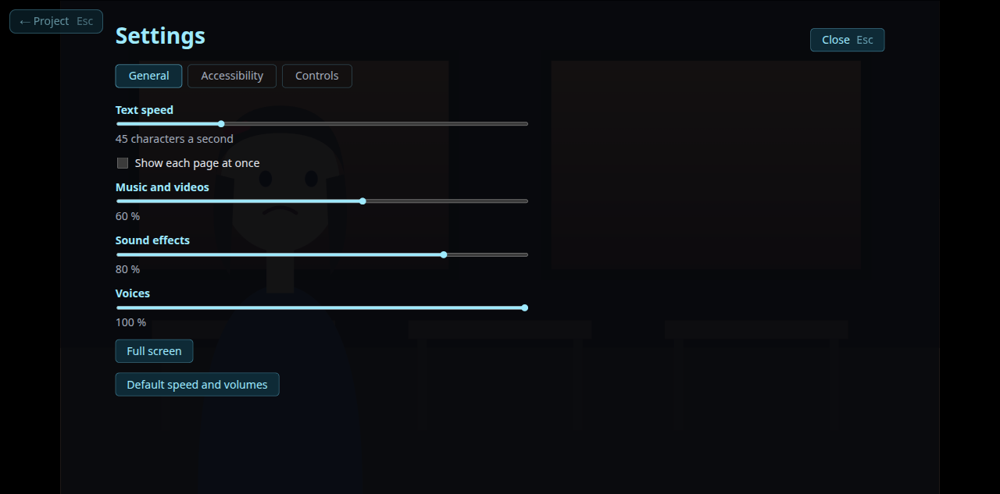
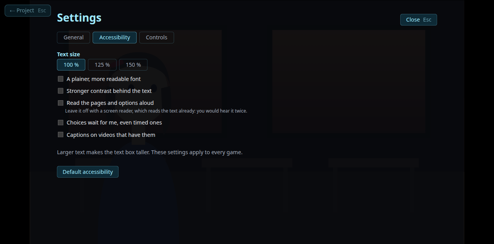
The Log shows what they read and picked. Clicking a line goes back to it.
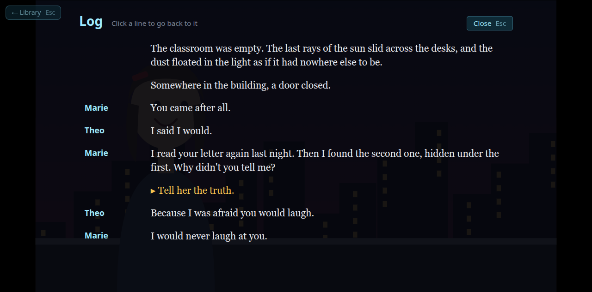
The game saves at every page. Save and Load add six slots, and Save to a file keeps a save as a file, to put aside or to carry to another computer. There, Load a save… in the library opens it, if the game is installed. The Map shows each choice they have reached and where each option led, so that they can try another from there.
23. The player's name, and timed choices
To let players name the hero, ask for it, then write the name between braces wherever it goes:
[ask: Hero = Alex]
— {Hero}: So that's my name.
Marie looked up. “{Hero}? Is that you?”
The story stops on a small box to type the name, at most 12 letters. Alex stands in until
they give one, or if they leave it empty.
A choice can have a time limit. Write it after its name, and end one option with [timeout]:
it is never shown, and it is what happens when time runs out.
[choice: Answer 10s] > Tell her the truth. = Truth > Lie. = Lie > … = Silent [timeout]
Players who need more time can ask choices to wait for them, in their settings.
24. Translating your story
On the projects screen, Copy without the story makes a new project with your files,
characters and settings, but none of your chapters. Give it a name and the language of the
translation, then import the translated text into it, from Word or pasted. Keep the tags as they are,
[bg: rooftop] or [enter: marie]: that is how the translation finds your pictures and
sounds.